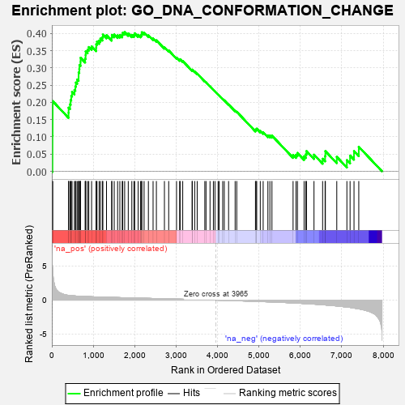
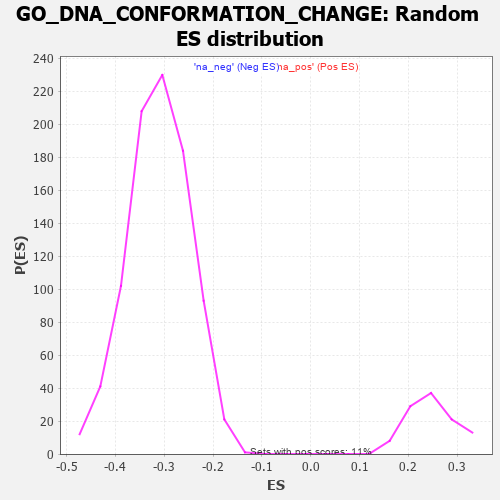

| | | Dataset | 7d |
| Phenotype | NoPhenotypeAvailable |
| Upregulated in class | na_pos |
| GeneSet | GO_DNA_CONFORMATION_CHANGE |
| Enrichment Score (ES) | 0.40393022 |
| Normalized Enrichment Score (NES) | 1.627866 |
| Nominal p-value | 0.0 |
| FDR q-value | 0.21789391 |
| FWER p-Value | 1.0 |
Table: GSEA Results Summary

Fig 1: Enrichment plot: GO_DNA_CONFORMATION_CHANGE
Profile of the Running ES Score & Positions of GeneSet Members on the Rank Ordered List
| PROBE | GENE SYMBOL | GENE_TITLE | RANK IN GENE LIST | RANK METRIC SCORE | RUNNING ES | CORE ENRICHMENT | | 1 | H2BE1 | | | 16 | 4.938 | 0.1031 | Yes |
| 2 | H2AX | | | 20 | 4.738 | 0.2036 | Yes |
| 3 | RRP8 | | | 403 | 0.699 | 0.1700 | Yes |
| 4 | NBN | | | 405 | 0.696 | 0.1847 | Yes |
| 5 | CENPS | | | 439 | 0.666 | 0.1947 | Yes |
| 6 | HAT1 | | | 454 | 0.659 | 0.2069 | Yes |
| 7 | WRN | | | 469 | 0.649 | 0.2190 | Yes |
| 8 | RFC2 | | | 488 | 0.635 | 0.2302 | Yes |
| 9 | MCM2 | | | 546 | 0.614 | 0.2361 | Yes |
| 10 | HIRA | | | 568 | 0.608 | 0.2463 | Yes |
| 11 | CCNB1 | | | 581 | 0.601 | 0.2576 | Yes |
| 12 | MCM7 | | | 612 | 0.591 | 0.2664 | Yes |
| 13 | MCM8 | | | 646 | 0.578 | 0.2745 | Yes |
| 14 | NOC2L | | | 647 | 0.578 | 0.2868 | Yes |
| 15 | RFC3 | | | 663 | 0.571 | 0.2971 | Yes |
| 16 | SMC2 | | | 667 | 0.570 | 0.3088 | Yes |
| 17 | MRE11 | | | 693 | 0.560 | 0.3176 | Yes |
| 18 | XRCC6 | | | 694 | 0.560 | 0.3295 | Yes |
| 19 | BLM | | | 804 | 0.531 | 0.3270 | Yes |
| 20 | RFC4 | | | 815 | 0.528 | 0.3370 | Yes |
| 21 | RPA1 | | | 817 | 0.527 | 0.3480 | Yes |
| 22 | ASF1B | | | 863 | 0.515 | 0.3533 | Yes |
| 23 | HMGB2 | | | 892 | 0.507 | 0.3605 | Yes |
| 24 | TOP3B | | | 960 | 0.493 | 0.3625 | Yes |
| 25 | XPA | | | 1070 | 0.469 | 0.3587 | Yes |
| 26 | AIFM1 | | | 1072 | 0.469 | 0.3685 | Yes |
| 27 | RAD51 | | | 1090 | 0.466 | 0.3763 | Yes |
| 28 | MCM3 | | | 1142 | 0.456 | 0.3795 | Yes |
| 29 | ERCC3 | | | 1173 | 0.451 | 0.3853 | Yes |
| 30 | RBBP7 | | | 1220 | 0.443 | 0.3889 | Yes |
| 31 | CHD3 | | | 1232 | 0.442 | 0.3969 | Yes |
| 32 | NRDE2 | | | 1320 | 0.425 | 0.3949 | Yes |
| 33 | RBX1 | | | 1445 | 0.401 | 0.3877 | Yes |
| 34 | GRWD1 | | | 1449 | 0.401 | 0.3959 | Yes |
| 35 | MCM6 | | | 1506 | 0.389 | 0.3970 | Yes |
| 36 | PAF1 | | | 1588 | 0.376 | 0.3948 | Yes |
| 37 | DDB1 | | | 1642 | 0.366 | 0.3958 | Yes |
| 38 | ERCC8 | | | 1699 | 0.357 | 0.3963 | Yes |
| 39 | ERCC2 | | | 1712 | 0.354 | 0.4023 | Yes |
| 40 | WAPL | | | 1758 | 0.344 | 0.4039 | Yes |
| 41 | CHD4 | | | 1845 | 0.329 | 0.4000 | No |
| 42 | TASOR | | | 1931 | 0.316 | 0.3959 | No |
| 43 | HELQ | | | 1982 | 0.307 | 0.3961 | No |
| 44 | ASCC3 | | | 2000 | 0.305 | 0.4004 | No |
| 45 | SART3 | | | 2084 | 0.293 | 0.3961 | No |
| 46 | PSME4 | | | 2143 | 0.285 | 0.3948 | No |
| 47 | CHD1 | | | 2168 | 0.282 | 0.3978 | No |
| 48 | MORC2 | | | 2171 | 0.281 | 0.4035 | No |
| 49 | BAZ2A | | | 2227 | 0.272 | 0.4023 | No |
| 50 | TOP3A | | | 2331 | 0.256 | 0.3947 | No |
| 51 | KAT6A | | | 2444 | 0.237 | 0.3855 | No |
| 52 | MBD3 | | | 2524 | 0.223 | 0.3802 | No |
| 53 | DDX1 | | | 2718 | 0.196 | 0.3599 | No |
| 54 | KAT6B | | | 2821 | 0.180 | 0.3508 | No |
| 55 | RTEL1 | | | 3010 | 0.148 | 0.3301 | No |
| 56 | HDAC1 | | | 3086 | 0.138 | 0.3235 | No |
| 57 | CUL4A | | | 3097 | 0.137 | 0.3251 | No |
| 58 | ERN2 | | | 3160 | 0.129 | 0.3200 | No |
| 59 | DDX3X | | | 3388 | 0.091 | 0.2931 | No |
| 60 | RFC5 | | | 3389 | 0.091 | 0.2951 | No |
| 61 | TOP1 | | | 3449 | 0.084 | 0.2894 | No |
| 62 | XPC | | | 3509 | 0.076 | 0.2835 | No |
| 63 | DHX9 | | | 3693 | 0.044 | 0.2612 | No |
| 64 | DAXX | | | 3722 | 0.038 | 0.2584 | No |
| 65 | CHD1L | | | 3819 | 0.024 | 0.2468 | No |
| 66 | NIPBL | | | 3900 | 0.010 | 0.2368 | No |
| 67 | TOP2B | | | 3938 | 0.005 | 0.2322 | No |
| 68 | PARP1 | | | 4014 | -0.010 | 0.2229 | No |
| 69 | MCPH1 | | | 4039 | -0.014 | 0.2202 | No |
| 70 | ABL1 | | | 4125 | -0.027 | 0.2099 | No |
| 71 | MCM9 | | | 4163 | -0.036 | 0.2060 | No |
| 72 | RSF1 | | | 4267 | -0.053 | 0.1941 | No |
| 73 | CHD9 | | | 4425 | -0.081 | 0.1759 | No |
| 74 | ERCC6 | | | 4464 | -0.087 | 0.1729 | No |
| 75 | SMC4 | | | 4916 | -0.180 | 0.1194 | No |
| 76 | ATRX | | | 4929 | -0.184 | 0.1218 | No |
| 77 | XRCC5 | | | 4946 | -0.187 | 0.1238 | No |
| 78 | PURA | | | 5032 | -0.205 | 0.1174 | No |
| 79 | DDX11 | | | 5102 | -0.225 | 0.1134 | No |
| 80 | TOP2A | | | 5216 | -0.250 | 0.1043 | No |
| 81 | CDK1 | | | 5264 | -0.262 | 0.1039 | No |
| 82 | RAD50 | | | 5314 | -0.276 | 0.1036 | No |
| 83 | FANCM | | | 5824 | -0.413 | 0.0477 | No |
| 84 | SET | | | 5895 | -0.434 | 0.0481 | No |
| 85 | CHD2 | | | 5930 | -0.445 | 0.0532 | No |
| 86 | UBB | | | 6090 | -0.503 | 0.0438 | No |
| 87 | BAHD1 | | | 6132 | -0.514 | 0.0495 | No |
| 88 | RNF8 | | | 6147 | -0.518 | 0.0588 | No |
| 89 | ZNFX1 | | | 6329 | -0.588 | 0.0483 | No |
| 90 | M1AP | | | 6537 | -0.680 | 0.0365 | No |
| 91 | TPR | | | 6597 | -0.709 | 0.0441 | No |
| 92 | PIF1 | | | 6604 | -0.713 | 0.0585 | No |
| 93 | HFM1 | | | 6879 | -0.855 | 0.0419 | No |
| 94 | RBBP4 | | | 7123 | -1.010 | 0.0326 | No |
| 95 | CETN2 | | | 7200 | -1.070 | 0.0457 | No |
| 96 | SYCP1 | | | 7295 | -1.167 | 0.0586 | No |
| 97 | UBC | | | 7410 | -1.274 | 0.0712 | No |
Table: GSEA details [plain text format]

Fig 2: GO_DNA_CONFORMATION_CHANGE: Random ES distribution
Gene set null distribution of ES for GO_DNA_CONFORMATION_CHANGE